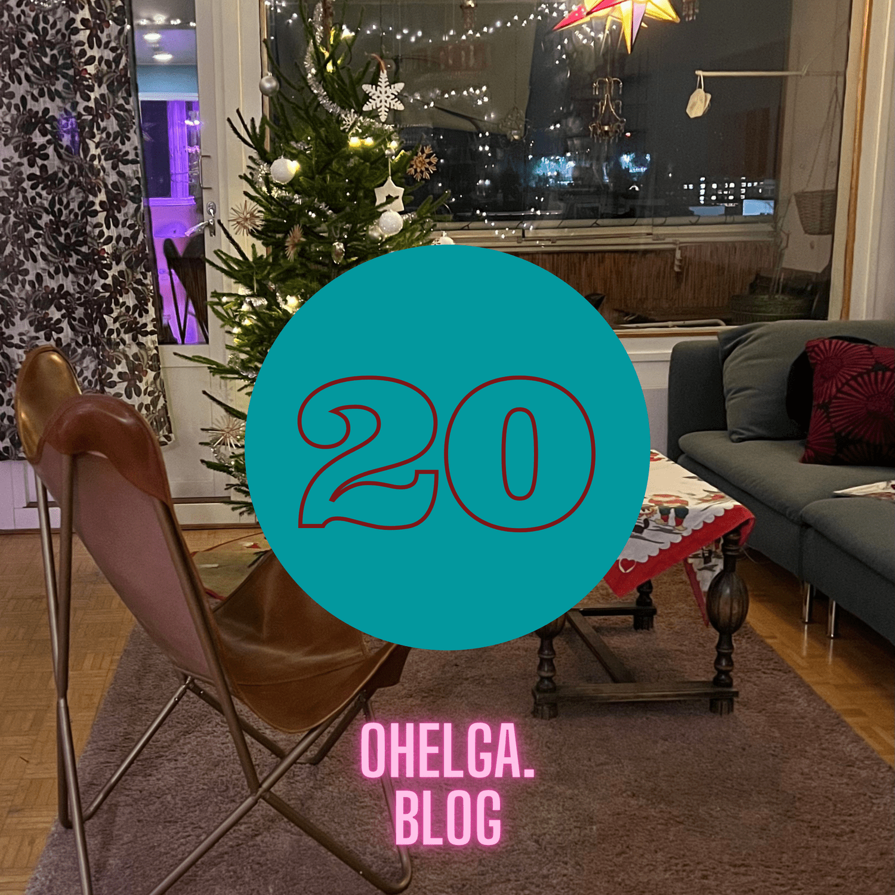

Vi introducerar genren gospel-heavy-dansbands-kyrkokonsert-bil-humppamusik. Eikä siinä kaikki: Johannalle menee myös aikajanat sekaisin.
Apple Music:
Spotify:

Vi introducerar genren gospel-heavy-dansbands-kyrkokonsert-bil-humppamusik. Eikä siinä kaikki: Johannalle menee myös aikajanat sekaisin.
Apple Music:
Spotify:

Kommentit / Kommentarer (2)
<p>Det blev ingen lucköppning igår men då jag lyssnar på det idag fick jag följande upplevelse en bit in på framförandet.Jag tänker mig en fullsatt krog där de flesta har fått i sig tillräckligt många glas och sorlet är högt. Då reser sig en av gästerna och sjunger.</p>
<p>Trevligt med en heavyversion, men jag håller så med att den som man säger på finska blev lite "pliisu". Ska man göra en heavyversion ska man gå all in och göra den riktigt tung och mörk. Så var det ju inte här. Men visst kan Taage sjunga, som metalsångare ofta kan. De är vana att skrika och ta toner. Men julstämning fick jag inte, och heller inga andra kickar. En sexa.</p>